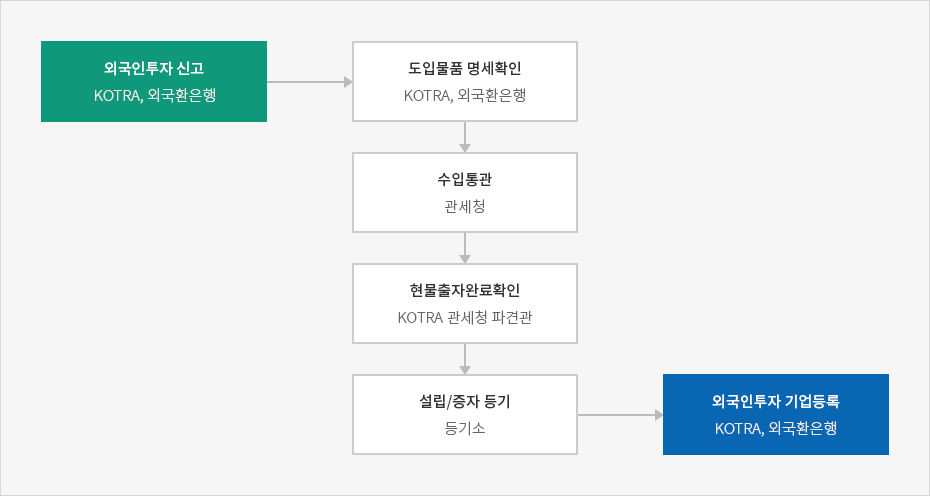
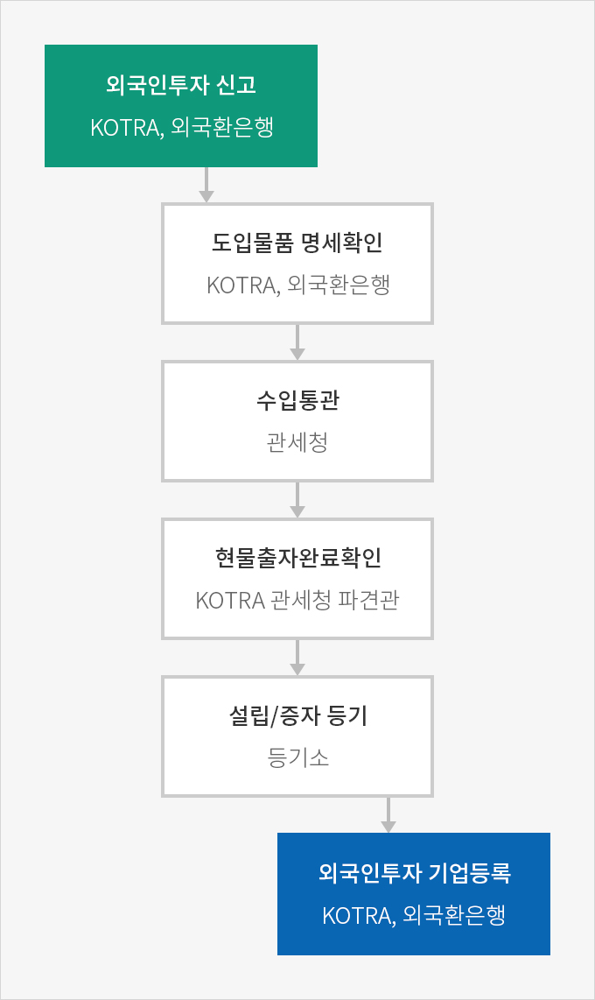

자본재 도입
- Home
- 경영·생활
- 통관
- 자본재 도입
외국투자가가 도입 자본재에 대한 관세를 면제받거나 현물출자를 위하여 자본재를 도입하는 경우 자본재 도입물품 명세를 검토·확인한 후에 통관절차를 거쳐야 한다.
자본재 도입절차



- 외국인투자 신고 (KOTRA, 외국환은행)
- 도입물품 명세확인 (KOTRA, 외국환은행)
- 수입통관 (관세청)
- 현물출자완료확인 (KOTRA 관세청 파견관)
- 설립/증자 등기(등기소)
- 외국인투자기업등록(KOTRA, 외국환은행)

자본재 도입물품명세 검토 · 확인
외국인투자 신고 후 수탁기관(외국환은행 또는 KOTRA)에 자본재 도입에 따른 자본재 도입물품명세 검토 · 확인을 신청하여야 한다. 검토 · 확인 대상 자본재는 아래와 같다.
- 관세 · 개별소비세 및 부가가치세의 면제 대상 자본재
- 외국투자가가 출자(출연)의 목적물로 도입하는 자본재
- 외국인투자기업이 외국투자가로부터 출자받은 대외지급수단이나 이의 교환으로 생기는 내국지급수단으로 도입하는 것으로서 산업 통상자원부 장관이 지정 · 고시하는 물품 중 자본재
※ 관련규정 : 「외국인투자 촉진법 시행령」 제38조
※ 자본재의 정의 : 「외국인투자 촉진법」제2조 제①항 제8호
※ 자본재의 정의 : 「외국인투자 촉진법」제2조 제①항 제8호